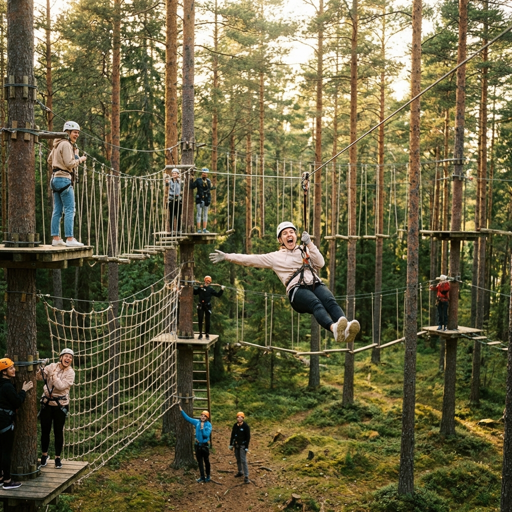

Panduan Lengkap Outbound di Batu Malang untuk Perusahaan
Temukan strategi terbaik untuk merencanakan outbound instansi Anda agar lebih efektif dan berkesan...
Baca SelengkapnyaTips, panduan, dan informasi terbaru seputar outbound, team building, dan rekreasi di Batu Malang.
Temukan strategi terbaik untuk merencanakan outbound instansi Anda agar lebih efektif dan berkesan...
Baca Selengkapnya
Inilah daftar kegiatan outdoor yang paling ampuh untuk mempererat kerjasama tim dan melepas penat...
Baca Selengkapnya
Ingin outbound berkualitas tapi tetap hemat? Cek rincian paket menarik kami yang sudah termasuk makan dan penginapan...
Baca Selengkapnya
Bukan sekadar jalan-jalan, outbound punya efek psikologis jangka panjang untuk produktivitas karyawan...
Baca Selengkapnya
Jangan sampai salah pilih! Inilah poin-poin krusial yang harus Anda perhatikan sebelum bekerjasama dengan vendor...
Baca Selengkapnya